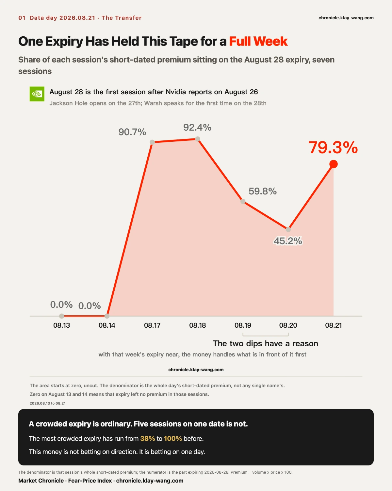
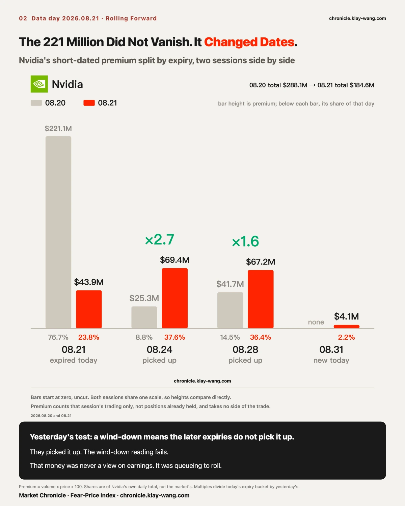
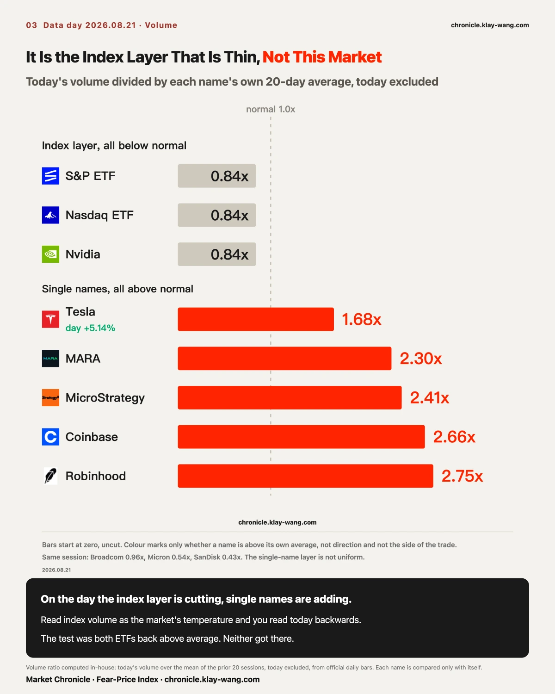
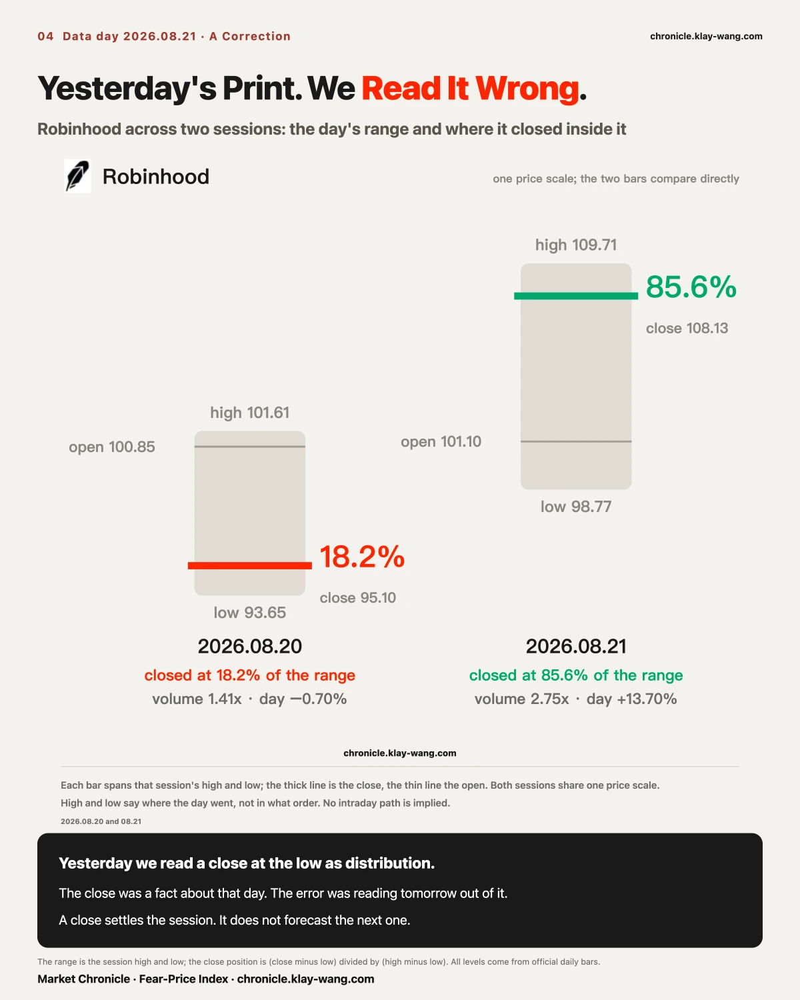
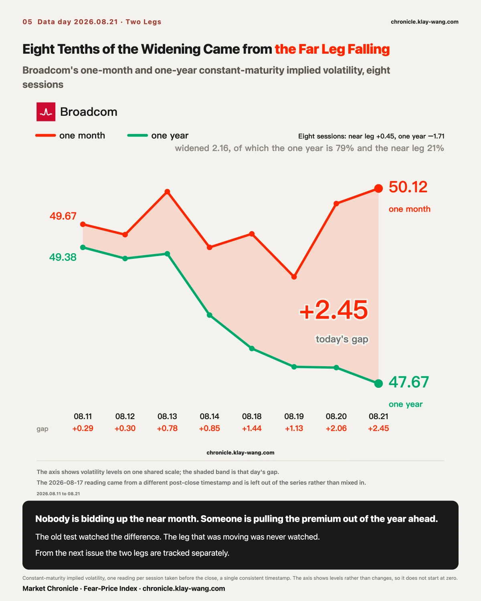
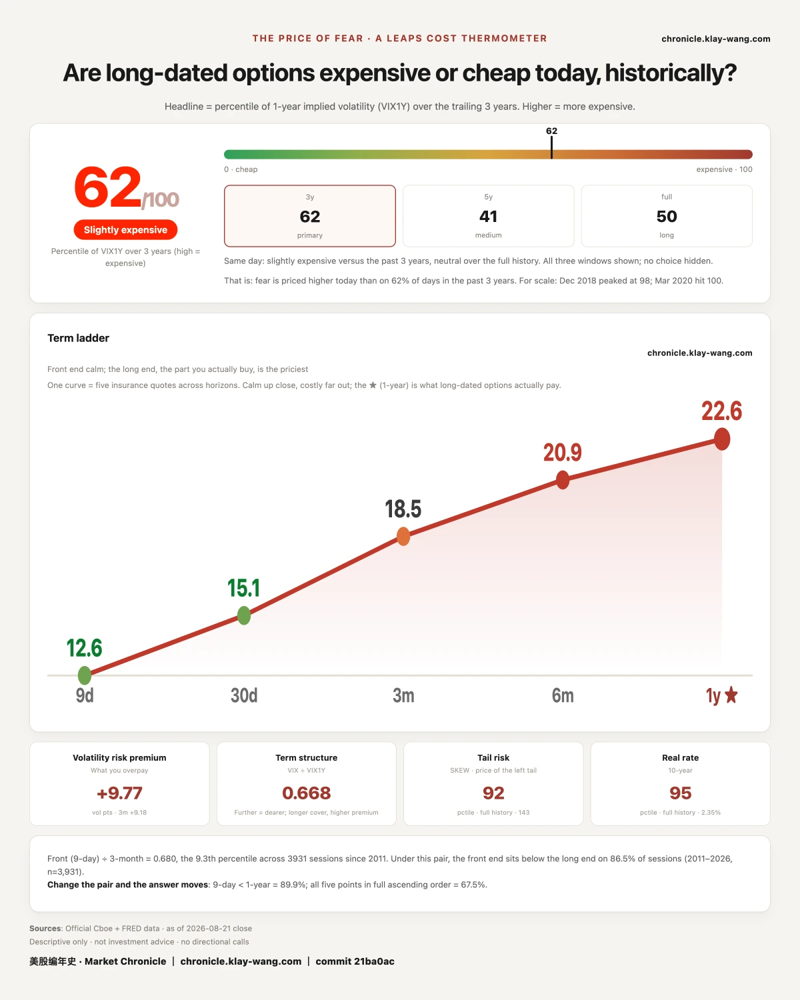

Today was August monthly expiration. These days come with a standard reading: contracts settle, positions go to zero, uncertainty clears, the market squares up.
The short-dated tape carried 574.8 million dollars of premium today. The expiry settling this afternoon held 43.9 million of it, or 7.6 percent. The August 28 expiry took 455.5 million, or 79.3 percent.
There is a fair objection here. Monthly expiration always rolls, and eighty percent landing on the next expiry is not obviously remarkable.
The objection is correct. So the baseline came first.
Across the last twenty sessions, the most concentrated expiry has ranged from 38 percent to 100 percent of the day's premium. July 30 was 88.5 percent. August 7 was 100 percent. August 13 and 14 were both above 99 percent. Against that distribution, 79.3 percent is unremarkable.
Today's number is not the story.
How long that date has been standing there is.

Take the August 28 share of each day's premium in order.
August 13, zero. August 14, zero. August 17, 90.7 percent. August 18, 92.4 percent. August 19, 59.8 percent. August 20, 45.2 percent. Today, back to 79.3 percent.
The dip in the middle has a clean explanation. The weekly expiry was closing in, and money dealt with what was in front of it first. That business settled this afternoon, and attention went straight back where it had been.
So the shape is not concentration today. It is that August 28 has been this market's focal point since last Monday, interrupted on two sessions out of five.
None of this appeared on a leaderboard. A price move is an outcome, and it costs nothing to produce. Premium is an opinion with a price attached. The most persistent opinion of the week points at a single day.
That day is the first session after Nvidia reports on August 26. The same week, Jackson Hole opens on the 27th, and Warsh gives his first address as Fed chair on the 28th.
One company's results and one central banker's first words, landing on the same Friday. The market spent a week moving money onto it.

Yesterday carried a number and a written test. Of Nvidia's 221.1 million dollars in short-dated premium, 76.7 percent sat on the expiry that settled today, against 14.5 percent on the one covering the print. If the August 24 and August 28 expiries failed to pick that up after settlement, the expiration was rolling the book flat. If they picked it up substantially, yesterday was queueing, not positioning.
Nvidia carried 184.6 million today. Today's expiry, 43.9 million, 23.8 percent. August 24, 69.4 million, 37.6 percent. August 28, 67.2 million, 36.4 percent.
Against yesterday, August 24 went from 25.3 million to 69.4 million, a factor of 2.7. August 28 went from 41.7 million to 67.2 million, a factor of 1.6.
The rolling-flat reading does not hold. Yesterday's 221 million was never a statement about the print. It was standing in line to change dates.

The number worth looking at today is volume, not price.
The S&P ETF traded 0.84 times its twenty-day average. The Nasdaq ETF, 0.84. Nvidia, 0.84.
The same session: Tesla at 1.68 times, closing up 5.14 percent. MARA 2.30. MicroStrategy 2.41. Coinbase 2.66. Robinhood 2.75.
Yesterday described a thinning book. That needs one correction. What is thin is the index layer, not this market. Index money left on the same day single names added.
Yesterday also wrote down a condition that would overturn it: if volume returned above average after Friday's settlement while intraday ranges narrowed, the prior two sessions were routine pre-expiry quiet and that would be corrected here. Both index ETFs came in at 0.84 today. Volume did not return above average. The condition did not trigger, and the thin-book reading stands.

Yesterday carried a judgment on Robinhood. The market rejected it within a session.
It gapped up 5.30 percent yesterday, touched 101.61, closed at 95.10, settling at the 18.2 percent mark of the day's range, on 1.41 times average volume. The three other names that gapped with it closed between the 72nd and 96.7th percentile of their ranges. What went out was this: a gap up, on volume, closing at the low of the day, is distribution.
Today Robinhood rose 13.70 percent, closed at 108.13, on 2.75 times average volume.
The error is worth locating precisely. Closing at the low of the range was a fact about yesterday, and it did say the bid could not hold the opening price. That part stands. The next step is where it broke: inferring the following session's direction from one day's trading structure. A day's tape tells you who had the upper hand that day. It does not tell you who shows up tomorrow.
A closing position is a settlement of the session, not a forecast of the next one.

On August 20, Micron rose 3.97 percent on 0.62 times average volume, and SanDisk rose 2.02 percent on 0.65. The call was a thin book, and two test conditions went on the record. If they turned lower on sub-1.0 volume, the thin-book reading held more completely. If they needed 1.5 times or more to keep rising, the low-volume advance needed rethinking.
Today Micron fell 0.77 percent on 0.54 times. SanDisk fell 0.28 percent on 0.43.
Less volume, opposite direction.
When the book is thin, direction belongs to whoever turns up. Buyers set it one day, sellers set it two sessions later, and neither needed six tenths of normal volume. These are not two events. They are two faces of one.
The narrative side of these names ran hot all week. Samsung announced a shareholder return of up to 110 trillion won, reported as the largest in Korean corporate history. Micron disclosed a research lab plan of roughly 10 billion dollars over a decade. SanDisk launched a new storage line. Meanwhile, Bank of America, citing EPFR, put semiconductor ETF outflows at a third consecutive week, 6.3 billion dollars cumulative.
The narrative is bullish, the fund flow is bearish, and the cash tape is watching. Three markets, three answers, one set of companies. SanDisk also held the single heaviest contract of the day, the August 28 1600 call at 14.09 million dollars, trading at 2.4 times its open interest. The buyers are in the options, not in the shares.

Thirty-day implied volatility minus one-year, measured on the same daily snapshot, runs 0.30, 0.78, 0.85, 1.44, 1.13, 2.06, and today 2.45.
The condition written at the outset was this: if it converged back below 1.0 on a day the underlying did not fall, the reading that someone was actively bidding the front month would be withdrawn.
Broadcom rose 1.21 percent today. The underlying gained and the inversion set a new high.
The condition did not trigger, so by the rule the reading is not withdrawn.
Splitting the spread into its two legs adds something more important. Measured on the same daily snapshot from August 11, Broadcom's front month went from 49.67 to 50.12, a gain of 0.45 across eight sessions. The one-year went from 49.38 to 47.67, a drop of 1.71. The spread widened by 2.16 in total, and eight tenths of that came from the far leg falling. The front month contributed two tenths.
So nobody is bidding up the front month. Someone is taking the risk premium out of the year. The near end barely moved. The far end did all the work.
That points back at us. The reading filed at the outset was that someone was actively positioning in the front month, and the front month moved 0.45 volatility points in eight sessions. The criterion watched the spread, the spread kept widening, the criterion kept not triggering, and the leg that was actually moving was never watched at all.
A criterion pointed at the wrong place tells you nothing, however long it goes untriggered. From the next issue it splits into the two legs. The original is void, and the reason is recorded here.
SpaceX printed negative 4.35 on the same measure today, the deepest this week. Two names moving opposite ways along one axis.
Their mechanisms are opposite too. SpaceX's front month fell from 62.99 to 57.66 across four sessions, more than five points, while its one-year went only from 63.83 to 62.01. Broadcom's front month is bidding. SpaceX's front month is unloading.
There is a reason for the unloading. Musk said Thursday that recovery of the Starship second stage slips by several months, with the next flight possibly late this year or early next. That is bad news, and the stock did fall 4.29 percent on the week, down three sessions out of four. But to a front-month option, a binary event pushed out by several months means nothing is going to happen soon. Front-month insurance gets cheaper.
The bad news pressed the stock down and removed the near-term uncertainty at the same time. Both are true at once.
Everything above is priced within a month. Pull the lens out to a year and a different picture appears.
At-the-money implied volatility one year out, low to high: S&P ETF 18.1, Nasdaq ETF 24.5, Apple 28.5, Microsoft 32.6, Alphabet 35.0, Amazon 36.5, Nvidia 40.5, TSMC 41.5, Meta 42.0, Broadcom 47.8, Tesla 48.4, AMD 59.1, SpaceX 62.9, Intel 67.9, Micron 68.8, SanDisk 85.6.
SanDisk at 85.6 needs a caveat. The strike carrying that reading holds 34 contracts of open interest. The number is real and its representativeness is weak. It should not stand in for the name.
Tesla is the one to look at. It rose 5.14 percent today, among the strongest large caps on the board, on 1.68 times average volume. Its one-year reading was 48.28 yesterday and 48.24 today.
It did not move.
The market's view of Tesla one year from now did not shift by a single tick on today's candle. The 164.3 million dollars of premium it drew today, second heaviest on the board, went entirely to the nearest few expiries.
A price move is an outcome and costs nothing to produce. A one-year price is an opinion with a cost attached. Today the first moved five points and the second moved 0.04.
This is why a leaderboard should never be read alone.
The reading came in at 62, the lowest of the week. The week ran 65.3, 69.7, 68.4, 63.4, 67.9, 62.
A low on monthly expiration day is not surprising in itself. Settlement clears a large block of front-month insurance, and part of the decline is mechanical.
The shape of the pricing is the part worth reading. Today's volatility term ladder: nine day 12.58, thirty day 15.13, three month 18.50, six month 20.90, one year 22.64. The front end sits at two thirds of the one-year.
The same session, the Cboe SKEW index printed 143.23, in the 92.4th percentile of its full history. That index measures what the market pays for the extremes.
Near-term insurance is cheap enough to sit at two thirds of the far end, while the price of tail protection sits near a historical high. This market is not afraid of next week, and it has been paying for the improbable all along.
Unafraid and unhedged are different things. Today's market managed the first without doing the second.
The fence measure says the same thing from another direction. Across five sessions this week, the S&P ETF used an average 61.7 percent of its downside half against 14.7 percent of its upside half. For the Nasdaq ETF the figures are 74.4 and 1.8. The lower bound was breached twice. The upper bound was never breached. Today was the sole exception, with both names leaning up.
Two independent measures, one tracking realized range and the other tracking the price of the extreme, pointing the same way.
The most persistent opinion of the week points at August 28, and not one leaderboard mentioned it.
Tesla rose 5.14 percent today and its one-year price went from 48.28 to 48.24, a move of 0.04. The advance is an outcome. The one-year price is the opinion with a cost attached.
Front-end insurance sits at two thirds of the one-year while the price of the tail sits in the 92nd percentile. This market is not afraid of next week, and it has been paying for the improbable all along.
Fear-Price Index · 2026-08-21 · reading 62/100: one-year volatility VIX1Y at 22.64, the 62nd percentile of the last three years, where higher means dearer. Daily ledger and methodology at chronicle.klay-wang.com · Credit: Fear-Price Index · Market Chronicle